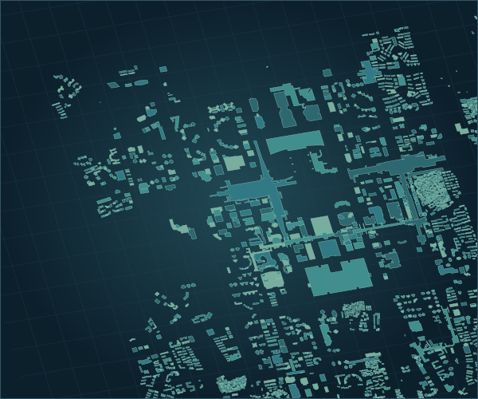

深圳福田 · 无障碍出行与城市治理
让每一步，
都被看见。
连接出行者与城市管理者。
从三维城市、设施接驳到障碍上报，探索更友好的城市出行体验。
无需安装 · 无需账号 · 当前浏览器独立演示

FUTIAN / SHENZHEN 22.535° N · 114.055° E
8,897栋建筑白模
福田本地空间数据 · 三维场景与设施信息
52,201段
最终处理路网
1,968处
公共交通与服务设施
03条
离线路线演示案例
02端
出行与治理协同展示
EXPLORE THE PROJECT
从城市，到每个人。
选择一个视角，开始体验
SOURCE & DOCUMENTATION
查看完整实现，也欢迎亲自运行。
完整前端、Python 后端、GIS 制作工具、测试与运行说明均在同一仓库。